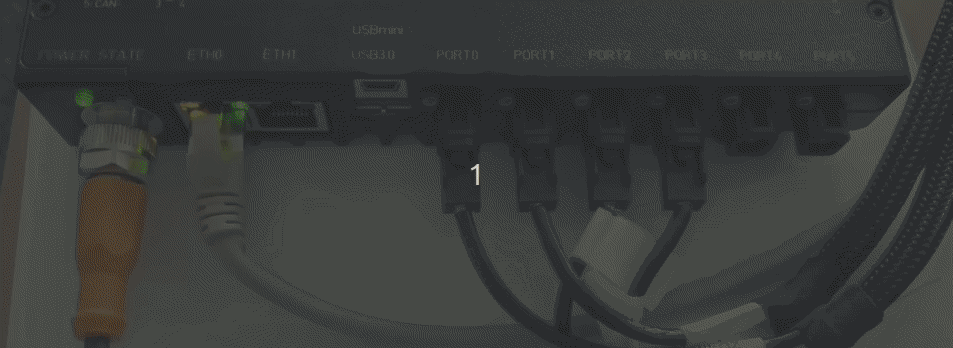

How to update the firmware
Warning
Update the firmware only through the ETH0 interface using a static IP address.
The recommended address is the default, 192.168.0.69.
Do not interrupt power or the Ethernet connection during the update. The VPU reboots after the update and may be temporarily unavailable during startup.
Obtain the firmware image
Before starting, contact ifm support for an image approved for your VPU model and a compatible update tool.
Note
Use only firmware specified for your VPU model. Firmware for OVP80x or OVP81x must not be treated as OVP93x firmware.
(Optional) Save the current configuration
Depending on the starting and target firmware versions, the configuration might not be fully preserved after an update. To make sure you do not lose your configuration, we recommend saving it locally before performing the update.
The CLI examples on this page require an ifm3d build that lists ovp9xx in ifm3d --help.
To save the current configuration:
ifm3d ovp9xx config get > config_save.json
With the ifmVisionAssistant
Use the compatible ifmVisionAssistant version identified in the firmware workflow. If the firmware image is supplied in a ZIP archive, extract it before selecting the file.
Open the Vision Assistant and connect to the OVP93x,
Navigate to the
VPU Settingswindow and clickUpdateunder theFirmware Updatesection. The version beside theUpdatebutton refers to the current version running on VPU.Select the file and the update process will start.
Once the update is complete, the device will reboot.
Note
In rare cases, the VPU may remain in recovery mode during a firmware update. If this happens, follow the instructions for rebooting to productive mode using the ifm3d API.
With the ifm3d API
In the instructions below, replace <path/to/firmware_image.swu> with the path to the approved firmware image.
Warning
TODO: Verify the flash procedure and return to productive mode with the release CLI and SDK.
$ ifm3d ovp9xx swupdate flash <path/to/firmware_image.swu>
#include <ifm3d/device/o3r.h>
#include <ifm3d/swupdater/swupdater.h>
...
auto o3r = std::make_shared<ifm3d::O3R>();
auto sw = std::make_shared<ifm3d::SWUpdater>(o3r);
if (sw->FlashFirmware("<path/to/firmware_image.swu>")){
sw->WaitForProductive();
std::cout << "System ready!" << std::endl;
}
from ifm3dpy.swupdater import SWUpdater
from ifm3dpy.device import O3R
o3r = O3R()
sw = SWUpdater(o3r)
if sw.flash_firmware('<path/to/firmware_image.swu>'):
sw.wait_for_productive()
print("System ready!")
Note
The code snippets above do not show how to handle exceptions when they occur in the update process. Please refer to the API documentation for details on the potential exceptions thrown by each function.
Double check the firmware version after the update:
Warning
TODO: Verify post-update version readback with the release CLI and SDK.
$ ifm3d ovp9xx config get --path /device/swVersion/firmware
ifm3d::json config = dev->Get({"/device/swVersion/firmware"});
o3r.get(["/device/swVersion/firmware"])
Rebooting to productive mode
If you happen to be stuck in recovery mode, the device will not be “ping-able.” The LED behavior will look like below.

To reboot to productive, you have two options:
Option 1: Using ifm3d API
ifm3d ovp9xx reboot # Reboots the device to productive mode
/*
* Copyright 2024-present ifm electronic, gmbh
* SPDX-License-Identifier: Apache-2.0
*/
// This example shows the usage of SWUpdate Module
// https://api.ifm3d.com/stable/cpp_api/classifm3d_1_1SWUpdater.html
#include <ifm3d/device/o3r.h>
#include <ifm3d/swupdater/swupdater.h>
#include <iostream>
using namespace ifm3d::literals;
int main() {
std::string IP = "192.168.0.69";
auto o3r = std::make_shared<ifm3d::O3R>(IP);
auto swu = std::make_shared<ifm3d::SWUpdater>(o3r);
// swu->RebootToRecovery();
// swu->WaitForRecovery();
swu->RebootToProductive ();
}
################################################
# Copyright 2025-present ifm electronic, gmbh
# SPDX-License-Identifier: Apache-2.0
################################################
# This examples shows how to use SW Update Module
# https://api.ifm3d.com/stable/_autosummary/ifm3dpy.swupdater.SWUpdater.html#ifm3dpy.swupdater.SWUpdater
################################################
from ifm3dpy.device import O3R
from ifm3dpy.swupdater import SWUpdater
###################################
# Configure the IP and the path to
# the firmware file on your system
###################################
IP = "192.168.0.69"
TIMEOUT = 120000 # milliseconds
o3r = O3R(IP)
swu = SWUpdater(o3r)
# swu.reboot_to_recovery()
# swu.wait_for_recovery()
swu.reboot_to_productive()
if swu.wait_for_productive(TIMEOUT):
print("System is booted to productive state")
else:
print(f"System failed to boot to productive state in {TIMEOUT} milliseconds")
Option 2: Using Web Interface
When the device is in recovery mode, it opens the Software update webinterface at port 8080.
Open the webpage at http://<IP_ADDRESS_OF_VPU>:8080
Drop the .swu file. The firmware update begins and the system will boot into productive mode.
The full example script
For the full firmware update example, look for the fw_update.py script in the ifm3d-examples repository.